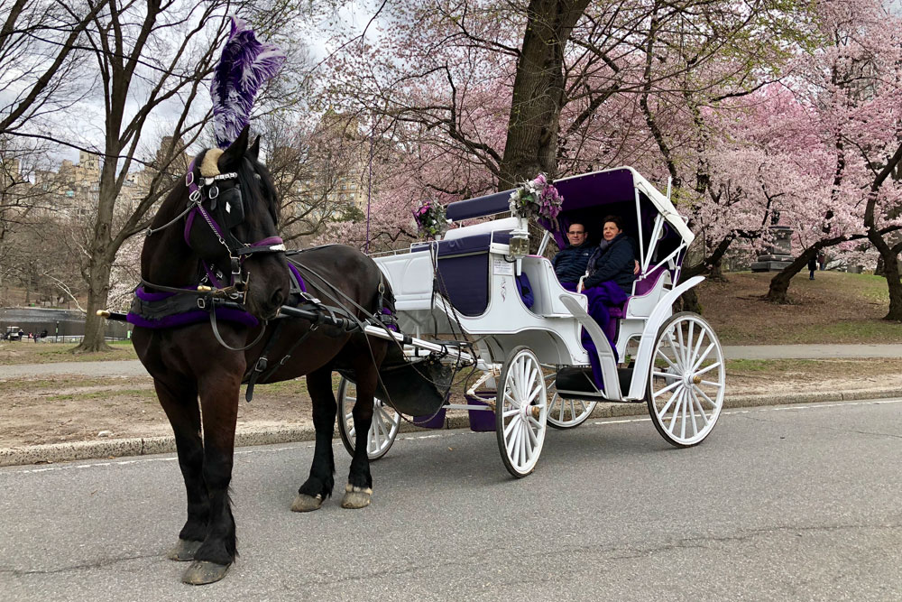

ICE SKATING: Get out in the fresh air and take to the ice on London's winter pop-up skating rinks. From Royal Parks to Oxford Street rooftops and museum gardens, they're appearing all over the place. Most of them have bars and cafes on site, if turkey stocks are running low at home.
WEEKEND WALKS: This week is practically one long weekend anyway, so grab your walking boots and head out on one of our weekend walk routes. See a part of London you haven't visited before, and best of all, it's free — unless you stop in a pub for a pint or two...
PRINCE CHARLES CINEMA: From 2018 releases to old classics, Leicester Square favourite Prince Charles Cinema screens a wealth of films between Christmas and New Year — think Isle of Dogs, Die Hard, West Side Story, The Jungle Book, and a Lord of the Rings overnighter.
HORSE DRAWN CARRIAGES: Experience Richmond Park from the luxury of a horse-drawn carriage. Take a 60 minute ride through the park and then get a behind the scenes tour of the working stables. £125 for two, book ahead, 26-30 December 2018
CHRISTMAS AT LONDON ZOO: For the first time, London Zoo is having a winter lights festival, winding through the zoo after the animals have gone to bed and featuring light sculptures depicting some of the creatures. Until 1 January 2019
CIRCUS 1903: Acrobats, contortionists, jugglers, high wire walkers and trapeze artists all feature in this circus show, fresh from the Paris Theatre in Las Vegas and making its European debut at Southbank Centre. £25-£99.50, book ahead, until 5 January 2019
CHRISTMAS IN LEICESTER SQUARE: An all-male burlesque group, and a kids' carnival are among the shows taking place in the 1920s speigeltent at Christmas in Leicester Square this week. The wooden cabins and food and drink stalls are still open in the rest of the square too. Until 6 January 2019
WINTER WONDERLAND: The Hyde Park behemoth is open until the new year, and in the past we've found that's a bit less crowded after Christmas. As well as the funfair rides, this year's event hosts a special cinema, ice kingdom, circus and more. Until 6 January 2019
SHOP TILL YOU FALL: Plan your shopping trip and think tactically. You might choose to target a particular shopping destination, such as the West End, Covent Garden or Westfield. Now is the ideal time to invest in some designer threads. Splash out at some luxury shopping destinations, such as trendy King's Road boutiques or the luxury labels of Bond Street. Find plenty of bargains on Oxford Street and Regent Street, and in areas like Seven Dials and Carnaby. Alternatively, stock up on cheap gadgets: Tottenham Court Road is a great place for computers and electronics.
LEARN TO BALLROOM: Put your dancing shoes on and take part in a free ballroom dancing session, where you'll learn the basic steps. Free, just turn up, 3pm. The lesson is followed by a social dancing session, which dancers of all levels are welcome to attend. Free, just turn up, 4pm